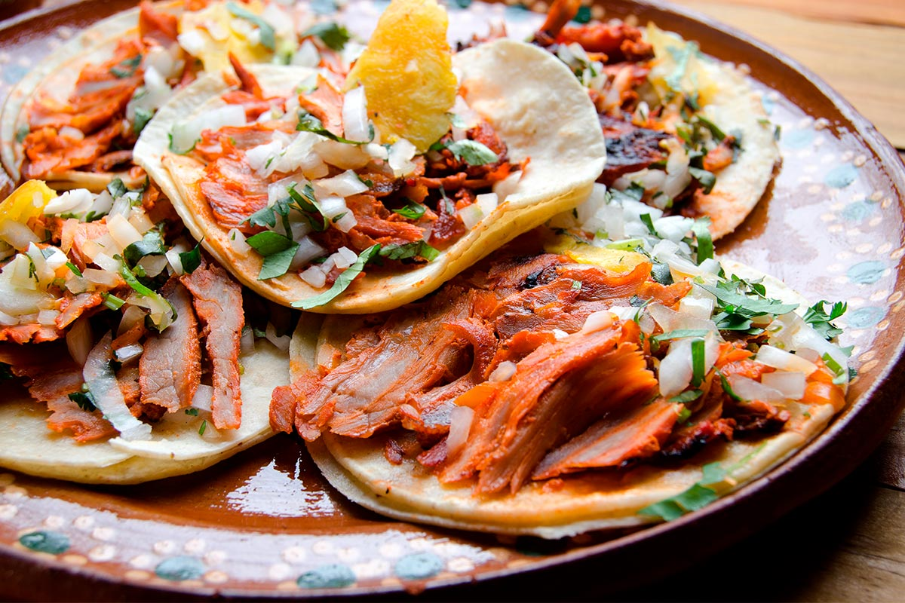
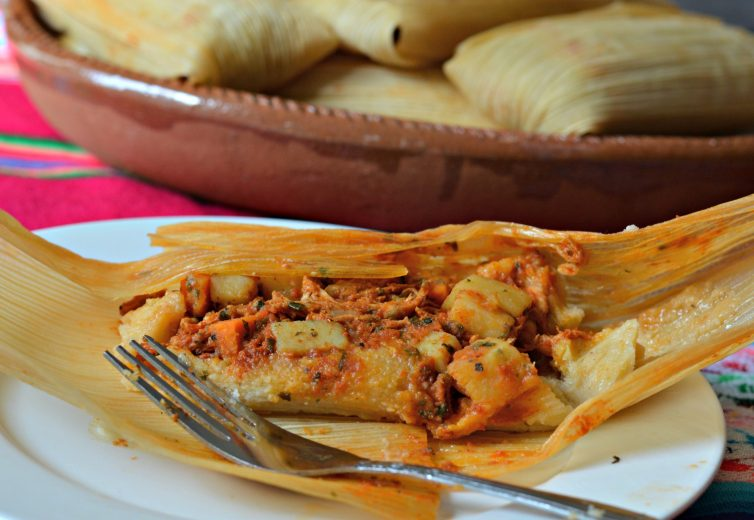
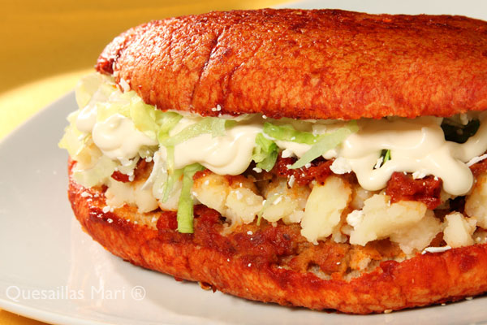
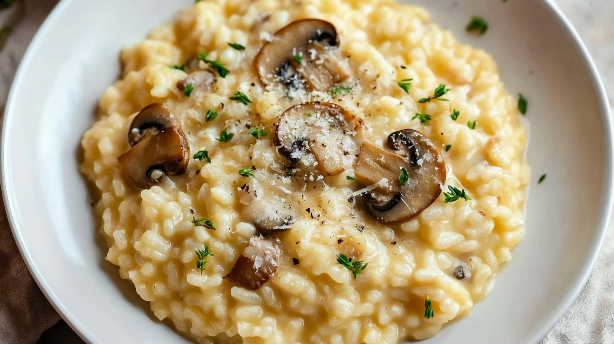
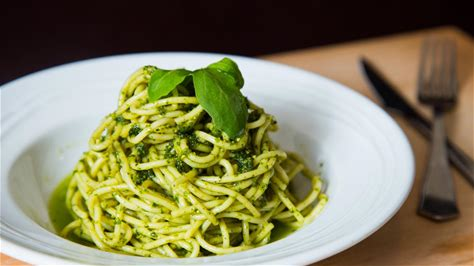

Recetas
×
Ingredientes:
- 500 g de carne molida de res (80% carne, 20% grasa)
- 4 panes para hamburguesa
- 4 rebanadas de queso cheddar
- 1 tomate grande, en rodajas
- 4 hojas de lechuga
- 1 cebolla morada, en rodajas
- 8 rebanadas de pepinillos en vinagre
- Salsa de tomate (kétchup)
- Mostaza
- Mayonesa
- Sal y pimienta al gusto
- 2 cucharadas de mantequilla
Procedimiento:
- Divide la carne molida en 4 porciones iguales y forma hamburguesas del tamaño del pan, asegurándote de que no queden muy gruesas.
- Condimenta las hamburguesas con sal y pimienta al gusto por ambos lados.
- Calienta una sartén o parrilla a fuego medio-alto. Cocina las hamburguesas por 3-4 minutos de cada lado o hasta alcanzar el término deseado. Durante el último minuto de cocción, coloca una rebanada de queso cheddar sobre cada hamburguesa para que se derrita.
- Mientras tanto, unta los panes para hamburguesa con mantequilla y tuéstalos ligeramente en la sartén o parrilla.
- Arma las hamburguesas colocando una hoja de lechuga en la base del pan, seguida de la hamburguesa con queso, una o dos rodajas de tomate, cebolla, y pepinillos.
- Añade salsa de tomate, mostaza y mayonesa al gusto. Coloca la parte superior del pan.
- Sirve inmediatamente y acompaña con papas fritas o tu guarnición favorita.

Pizza Pepperoni
Ver Receta

Tacos al Pastor
Ver Receta
×
Ingredientes:
- 1 kg de carne de cerdo en láminas delgadas
- 100 g de achiote en pasta
- 2 chiles guajillos, sin semillas
- 1 taza de jugo de piña
- 2 dientes de ajo
- 1 cebolla pequeña
- Sal y pimienta al gusto
- 20 tortillas de maíz
- Piña fresca en trozos
- Cilantro picado
- Cebolla picada
- Limones (opcional, para acompañar)
Procedimiento:
- Licúa el achiote, los chiles guajillos, el jugo de piña, el ajo y la cebolla hasta obtener una mezcla homogénea.
- Marina la carne con esta mezcla, asegurándote de cubrirla bien. Deja reposar por al menos 4 horas o toda la noche en el refrigerador.
- Cocina la carne marinada en una parrilla, sartén o asador a fuego medio-alto hasta que esté bien cocida. Si es posible, ensarta las láminas en un trompo para cocinarla al estilo tradicional.
- Corta la carne en trozos pequeños o en tiras finas.
- Calienta las tortillas de maíz en un comal hasta que estén suaves y calientes.
- Sirve la carne sobre las tortillas calientes. Agrega piña, cilantro y cebolla al gusto.
- Acompaña con limones para exprimir sobre los tacos antes de comer, si lo deseas.

Tamales
Ver Receta

Pambazos
Ver Receta

Risotto de Champiñones
Ver Receta
